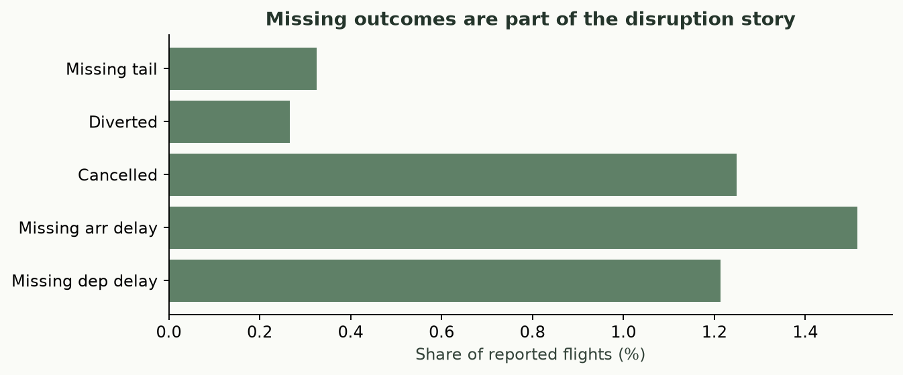
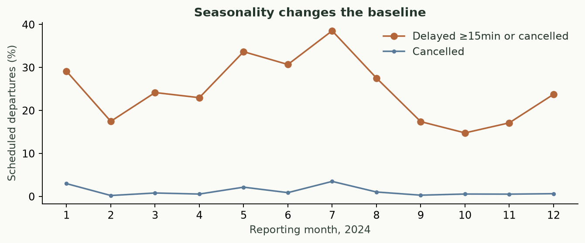
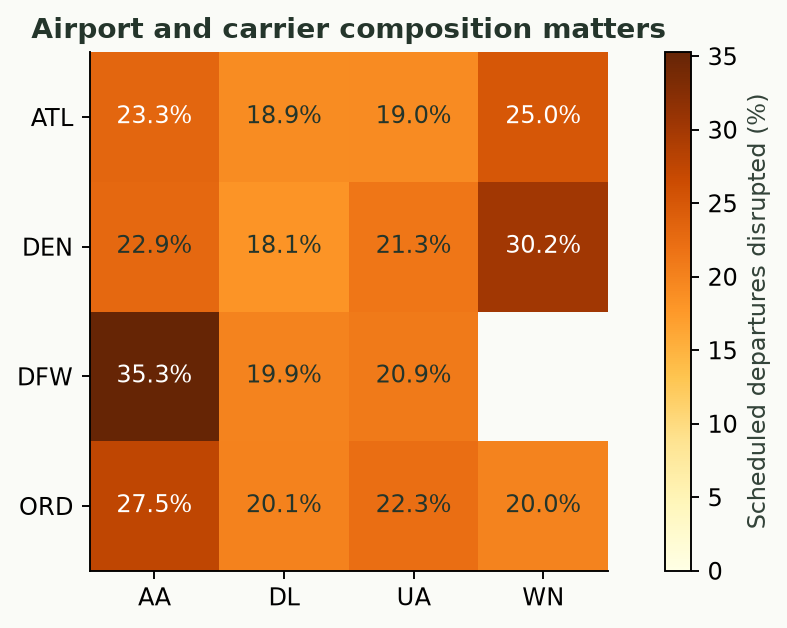
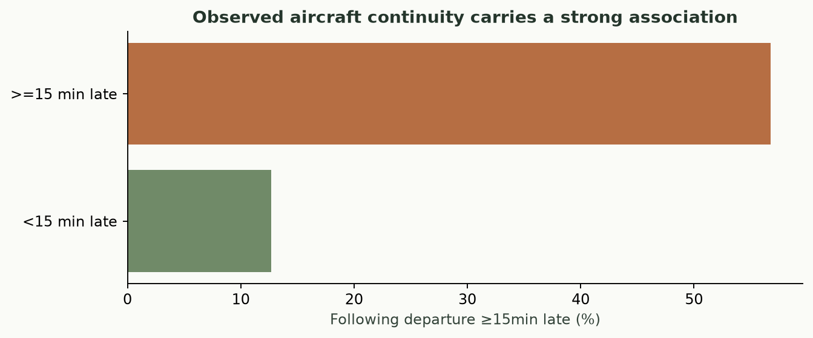
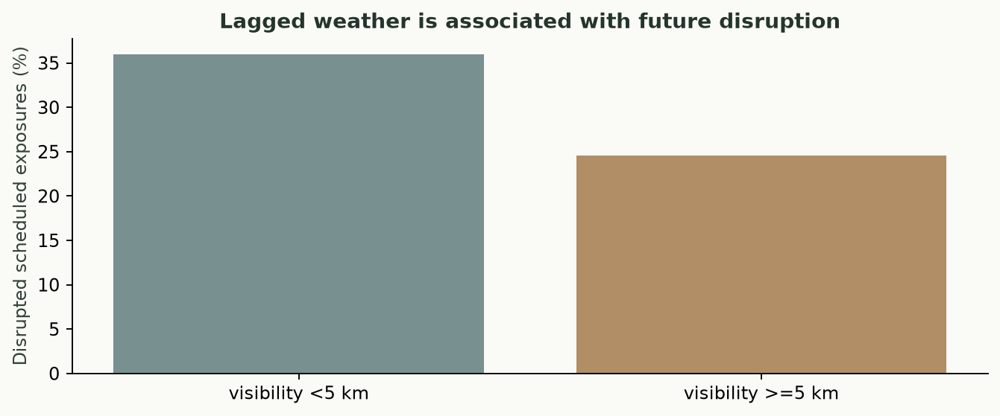

Rerunnable SQL EDA, 2024 · AA, DL, UA, WN · ATL, ORD, DFW, DEN
The extract includes all flights of these carriers touching any hub. It overrepresents major hubs and excludes regional affiliates reported under different carrier codes. Flight-delay averages condition on observed outcomes. No passenger counts, financial costs or crew connections are inferred.

Denominator. 1,619,420 reported flights touching four hubs.
Finding. 24,539 arrival delays are missing (1.52%); 20,229 flights are cancelled. 881,126 departures have negative delay.
Limitation. Missingness categories overlap. Delay observations exclude many cancelled/diverted flights, and this selected subnetwork is not the US system.
Implication. Show cancellation rates alongside signed observed delays; never replace missing arrival delay with zero.
Generating SQL
Denominator. 841,926 selected-carrier departures from four hubs, grouped by reporting month.
Finding. Month 7 has 38.5% disrupted departures versus 14.8% in month 10.
Limitation. One reporting year and changing carrier/airport schedules cannot establish a stable long-run seasonal pattern.
Implication. Evaluate against seasonal baselines and chronological holdouts; avoid random train/test splits.
Generating SQL
Denominator. 841,926 hub-origin scheduled departures; cells include their actual cohort schedules.
Finding. DFW/AA has 35.3% disruption (n=166,286), versus 18.1% for DEN/DL (n=12,439).
Limitation. These unadjusted groups differ in routes, schedule times and exposure. They do not establish carrier quality or causal airport effects.
Implication. Compare within cohorts and include airport identity and schedule workload in the forecast; preserve the scope denominator.
Generating SQL
Denominator. 724,524 validated adjacent observed-tail hub-turn links with reported preceding arrival and following departure delays.
Finding. previous arrival <15 min late: 12.7% following departures late (n=590,930); previous arrival >=15 min late: 56.8% following departures late (n=133,594).
Limitation. Retrospective same-tail continuity omits flights at nonhub turns, overnight turns, missing tails, crews and passenger connections. Association is not a causal effect.
Implication. Use validated chains for retrospective diagnosis; deployable forecasts must use only cutoff-available network state, not future aircraft assignments.
Generating SQL
Denominator. 28,471 airport cutoffs with accepted visibility, weather age ≤3h, and a complete target; overlapping two-hour exposures.
Finding. visibility <5 km: 35.9% disruption (n=1,056 cutoffs); visibility >=5 km: 24.5% disruption (n=27,415 cutoffs).
Limitation. Unadjusted association confounds seasonality, hubs and storms. Hourly two-hour windows overlap; NOAA publication time is assumed observation time plus one hour.
Implication. Use recent weather as a candidate feature and verify added value on chronological holdouts before making operational claims.
Generating SQL{
"departure_quantiles": [
-8.0,
-1.0,
46.0,
86.0,
225.0
],
"arrival_quantiles": [
-22.0,
-6.0,
45.0,
86.0,
225.0
],
"mean_departure_delay": 14.168770299767717,
"mean_arrival_delay": 8.330245955654371
}Quantiles and means use non-null reported signed delays. Missing arrival delay is never zero. The public data are final extracts and cannot reconstruct historical schedule revisions or publication latency.
Full SQL-derived results